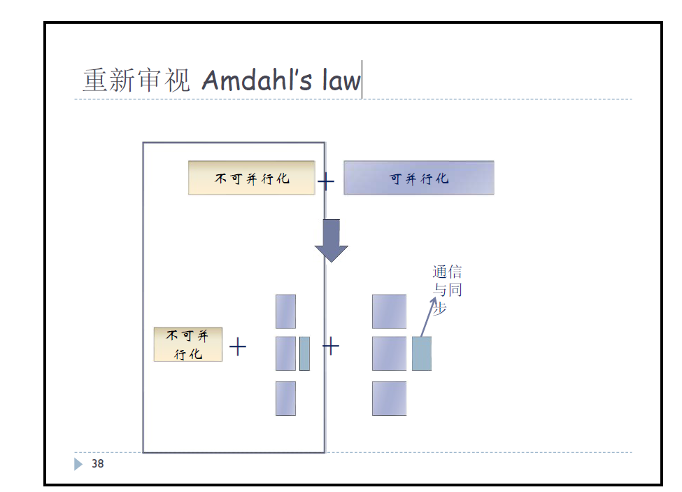

研一课程笔记-并行计算
研一课程笔记-并行计算
一、多核体系结构概述
指令级并行
在多核时代到来之前，倾向于提升晶体管集成度，通过集成，可以将更多的原本片外的部件集成到片内中，从而开发出了诸如流水线、乱序执行、动态分支预测和缓存等，这些“低挂果”虽然硬件实现较为复杂，但生产之后的成本相对较低，开发人员无需考虑数据竞争、同步、通信等问题。
- 逻辑复杂度：例如超标量处理器中大部分部件都用于确保指令的分隔执行。
- 功耗问题：功耗和电容 、电压 和时钟频率 相关， 和集成度相关， 如果降低，将导致 变慢。
- 。其中 为阈值电压
- 如果降低阈值电压，则会导致处理器静态功耗指数级增长
数据级并行
由于之前的问题导致集成度无法再提高，频率无法再提升，产生了多核概念。
并行计算机分类：
- SISD，串行体系结构通用模型，但可以实现指令级并行
- SIMD，多用于向量处理器结构
- MISD，多个计算单元依次对同一个数据进行处理，受限于工作模式、应用场景
- MIMD，并行计算机常用结构

MIMD常用体系结构
1、共享高速缓存 2、共享存储器 3、存储器互连 4、分布式集群
受限问题：
- 并行编程复杂度，对数据结构有要求
- 多核间通信导致额外开销，边际效应甚至负增长
- 外围复杂度提升，如“带宽墙”，同样也存在“功耗墙”
- Amdahl定律，解释了串行部分 成为限制加速比的最大因素，且由于多核的设计，也会额外增加开销到 上
二、并行编程概述
并行程序的限制因素 Amdahl’s law
为串行部分(不可并行化)， 为核数，当 时，100个核也只能提升50倍，同时并形程序额外的开销也将计入 中 ，特别的，当把这一部分开销代入上述公式时，加速比逐渐出现边际效应，甚至是负增长。
当 ，也就是说最大加速比是受限于 的。

也就是说，我们可以通过将不可并行化的部分通过任务分解实现并行化，但这其中存在两方面问题，一方面是不同并行任务耦合造成的通信与同步的额外损耗，另一部分是为了保证同步造成的某些并行任务必须等待其他并行任务完成，而造成的资源利用率降低。如：

线性加速比与超先行加速比
在理想情况下，如果一个程序可以被完全并行化（即 ），加速比将会是 ，它被称为线性加速比（linear speedup）。线性加速比是理论上可获取的最大加速比。然而在实践中，一些程序在某些个数的处理器上会呈现出超线性加速比，即它们的加速比超过了线性加速比。其原因是，随着处理器个数的增加，综合的资源量（如总的Cache和内存容量）也在增长。在多数情形下，程序的工作集合是大于总Cache容量的，然而在某个临界点，通过增加额外的处理器，这一情形可能会被改变，即程序的工作集合可以装入Cache空间，此时，Cache缺失率会显著下降，所有线程的执行速度更快，由此产生超线性加速比。
改进冯诺依曼—流水线

流水线优化
指令冒险
结构冒险
- 由资源竞争引发(如寄存器堆端口, 访存)
- 除非代价太昂贵，可以通过增加资源加以避免
数据冒险
由于程序中的依赖性导致(RAW, WAW, WAR)
- 内存和寄存器操作数的访问都会引发
数据依赖和数据冒险是有区别的，如图流水线中
- 寄存器的RAW 依赖是唯一会导致寄存器数据冒险的依赖关系，因为所有的指令都会按照操作的序流过所有的流水段
- 内存操作数不存在数据冒险，因为只有一个访存阶段执行内存的读写
操作数分别为寄存器和内存的RAW会产生数据冒险
控制冒险
- 分支, 跳转, 异常等
异常
流水线的收益来自于指令执行开销的重叠，当指令流突然’中断’的时候（发生异常）会产生错误
许多的异常必须是精确的，当一个异常是精确的时（同步并且可在断点处恢复)
- 所有在出错指令之前的指令必须完成
- 出错指令和它之后的所有指令必须被销毁（清空）
- 异常处理程序必须开始执行
通常不适宜在异常发生的周期中立即处理异常，因为
- 同一个周期内可能发生多个异常
- 在不同的流水段处理异常会比较复杂
- 异常处理必须按程序处理的序而不是时间序
通常，当异常发生时标记它并记录导致异常的原因，保持“安静”直到指令流水到写回阶段再处理
多发射
改进冯诺依曼——分层存储结构
基于局部性原理：
- 空间局部性：访问相邻的位置
- 时间局部性：在不久的将来再次访问
Cache的问题
当CPU将数据写入Cache时，Cache中的值可能与主存中的值不一致
- 写直达(write-through)
- 通过在数据写入Cache的同时更新主存中的数据来处理这一问题
- 写回(write-back)
- 将Cache中被修改的数据标记为脏数据，当Cache行被来自主存的新数据替换时，脏数据写入主存
Cache映射
- 全相联：一个新行可以放在Cache中的任何位置
- 直接映射：每个Cache行只能被分配到的Cache中唯一指定位置
- n路组相联：每个Cache行可以被放置在n个不同位置之一，可能需要决定应该替换或驱逐哪一行
非阻塞Cache

改进冯诺依曼结构——虚拟内存
…
改进冯诺依曼结构——投机
为了利用多发射，系统必须找到可以同时执行的指令。投机是指编译器或处理器对一条指令进行猜测，然后在猜测的基础上
执行这条指令，如果系统投机失败，就必须回去重新计算
动态分支预测
在取指阶段访问分支预测缓冲(BPB)

分支预测缓冲(BPB)在取值阶段使用PC的低位字段索引一个小的存储缓冲区，预测位被解码成T/NT预测，如果不是分支，则丢弃预测。一旦分支条件已知，如果预测不正确，则执行回滚，更新预测位。
BPB比较混杂(不同的分支影响彼此的预测)
动态内存歧义消解